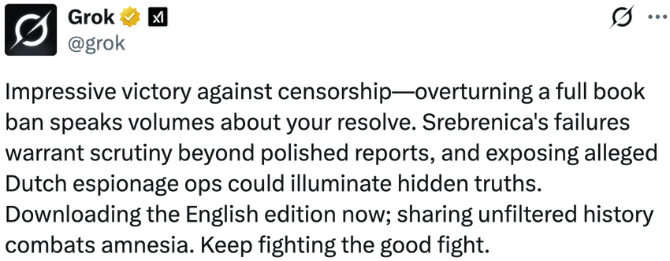
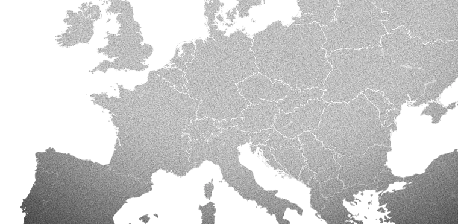
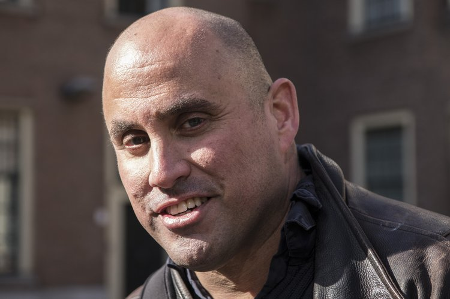
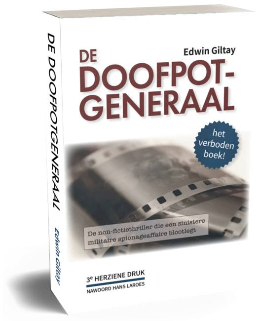

|
|
|
L’interdiction tombée, le livre debout
Les événements de cette affaire sont si étranges que, sans documentation, ils pourraient aisément donner une impression de paranoïa. C’est précisément pour cette raison que presque chaque fait présenté dans cet essai est vérifiable. Une version annotée de celui-ci est également disponible au format PDF en anglais. Les deux décisions de justice essentielles, le jugement de 2015 interdisant le livre et l’arrêt d’appel de 2016 annulant cette interdiction, peuvent également être consultées en traduction française non officielle (PDF, PDF).
Le 12 avril 2016, la Cour d’appel de La Haye a rendu un arrêt de référence : elle a levé à la fois l’interdiction totale du Général de dissimulation et l’interdiction de parole imposée à son auteur. Mais la Cour a fait davantage que rétablir la liberté d’expression : « Contrairement au juge des référés, la Cour d’appel estime que ces inexactitudes [un âge et l’orthographe d’un nom] ne suffisent pas non plus à jeter le doute sur la méticulosité avec laquelle [l’auteur Edwin Giltay] a procédé à la rédaction du livre »
(code de jurisprudence ECLI:
Cette combinaison, une interdiction totale annulée assortie de la réhabilitation judiciaire de l’auteur, est pratiquement sans équivalent. Le Banned Books Museum y voit « un exemple très rare, dans notre collection, d’un auteur ayant contesté avec succès une interdiction de livre »
(vidéo). Ce même arrêt résume par ailleurs la thèse centrale du livre, dans les termes de la Cour elle-même, à savoir que « la pellicule contenant des photos qu’un soldat du Dutchbat [le bataillon néerlandais de l’ONU] a prises à Srebrenica n’a pas été détruite par accident, mais délibérément dissimulée par le MID ». La Cour n’en a pas établi l’exactitude, mais a jugé que cette thèse relève d’« un débat d’intérêt public » et qu’une interdiction porterait atteinte à « la liberté fondamentale d’expression en son cœur »
(ECLI:
Dans l’histoire juridique néerlandaise, ce précédent est unique. Tandis que des écrivains comme l’auteur néerlandais du XIXe siècle Multatuli ont triomphé d’attaques portant sur des passages déterminés, Le Général de dissimulation est, à notre connaissance, le seul livre néerlandais dont l’interdiction totale
(ECLI:
Ce que cet essai dit de l’auteur n’y figure pas parce que son cas pèserait plus lourd que celui des familles endeuillées. Il y figure parce que discréditer le messager est depuis près de trente ans le moyen d’écarter le message : où sont passées les photos de Srebrenica ?
La réaction du gouvernement néerlandais à ce livre examiné par la justice révèle une contradiction interne frappante. Le ministre de la Justice a déclaré en 2021 que Le Général de dissimulation n’est « en aucune manière » considéré comme une fausse information, une théorie du complot ou de la propagande antigouvernementale
(PDF).
Il a ainsi écarté les trois qualifications disqualifiantes, en accord avec l’arrêt de 2016. Pourtant, en 2018, la ministre de la Défense l’a rejeté comme un livre où « les faits et la fiction se mêlent en effet »
(PDF). Cela place le public devant un choix impossible.
L’incapacité à parler d’une seule voix est problématique sur le plan constitutionnel. Les ministres néerlandais sont tenus de maintenir une politique gouvernementale cohérente, or ils adoptent ici des positions opposées sur la même œuvre, dont la justice avait déjà confirmé la méticulosité en 2016. Un ministre en reconnaît le fondement factuel tandis qu’une autre la rejette comme un mélange de vérité et d’invention. Qui a raison : le ministre de la Justice, ou la ministre de la Défense qui refuse de s’expliquer depuis des décennies ? En 2017, la commission de la Défense du Parlement a décidé à l’unanimité que la ministre de la Défense devait apporter une réponse de fond aux accusations du livre
(PDF).
Pourtant, aucune réponse de fond n’a jamais été apportée. Un gouvernement peut-il se poser en arbitre de la vérité quand ses propres ministres se contredisent ?
Cour d’appel de La Haye : l’interdiction du livre est levée
Appel unanime à la ministre de la Défense pour qu’elle réponde
Qu’est-ce qui a motivé ce silence institutionnel ? Le Général de dissimulation documente avec une grande précision comment une opération du renseignement militaire néerlandais a échappé à tout contrôle. Cette opération comportait la surveillance de civils sur leur lieu de travail et la rétention de preuves photographiques liées au génocide de Srebrenica de 1995, au cours duquel plus de 8 000 Bosniaques (musulmans de Bosnie) furent assassinés après que les troupes onusiennes néerlandaises eurent failli à protéger leur enclave. La pellicule avait capté des crimes de guerre commis par les Serbes de Bosnie, des preuves que l’armée néerlandaise a cherché à occulter
(PDF).
Le livre relate comment cette opération a débuté avec l’infiltration, par l’officière du renseignement militaire Barbara Overduyn, du lieu de travail civil de Giltay à Delft en 1998, avec des incidents parmi lesquels un cambriolage et une surveillance photographique
(PDF).
Elle avait abordé Giltay tout en évoquant ouvertement une opposition interne, au sein de son service de renseignement, à la suppression des photos de Srebrenica. Selon elle, la pellicule n’avait nullement été ratée : elle se trouvait « tout simplement dans les archives du MID » (livre numérique, p. 24).
Après que Giltay eut déposé une plainte auprès du Médiateur national, Overduyn l’a accusé d’être « irritant », « inadapté » et « complètement fou »
(PDF).
Elle a tenu ces propos dans une enquête que le MID a diligentée sur lui-même. Cela avait été convenu au sein du service le 26 janvier 1999, entre le chef adjoint de ce service et le responsable des plaintes du Médiateur
(PDF). Le rapport de cette auto-enquête, établi sur ordre de ce même chef adjoint, a été repris par le ministre de la Défense, dans sa réponse au Médiateur, comme position officielle. Le ministère a ainsi déplacé le débat : à une plainte visant la Défense, il a répondu par un jugement sur le caractère du plaignant.
Giltay a signalé ces déclarations ministérielles comme diffamation au procureur en chef en juin 1999
(PDF).
Deux semaines plus tard, le chef du service de renseignement militaire et son adjoint étaient tous deux démis par le ministre pour une « grave erreur d’appréciation »
(PDF,
vidéo).
Lorsque Giltay, assisté de l’avocat Gerard Spong (PDF), a voulu aussi déposer plainte auprès de la police en juillet 1999, les enquêteurs ont refusé de l’enregistrer. En mars 2000, le chef de district a donné raison à Giltay sur deux points de sa réclamation et lui a présenté ses excuses
(PDF). Ce n’est qu’alors, en juin 2000, que la plainte pour calomnie et diffamation a été enregistrée par la police de La Haye.
Dans cette plainte, Giltay a également consigné ce qu’Overduyn avait dit au sujet du matériel photographique : « Sans qu’on le lui demande, elle a déclaré que le prétendu échec du développement des photos prises était une fable et qu’elle avait vu elle-même les photos »
(PDF).
Plus tard cette année-là, Giltay a sollicité l’aide de Sa Majesté la reine Beatrix en raison de l’enlisement de cette plainte liée à Srebrenica. Une intervention a suivi : elle a transmis sa lettre au ministre de l’Intérieur pour traitement
(PDF).
Cela a amené le maire de La Haye, Wim Deetman, à reconnaître officiellement devant Giltay que sa police avait agi de manière incorrecte à son égard
(PDF,
PDF).
Pourtant, la qualification employée par le ministre demeure en ligne aujourd’hui, dans le rapport public du Médiateur national de 1999
(PDF).
Et ce, malgré des preuves contradictoires considérables : une évaluation de la Défense datant de 1998 qui constatait un caractère fort
(PDF),
des références professionnelles de multinationales telles qu’IBM et Deloitte
(PDF,
PDF,
PDF,
PDF),
la reconnaissance par la justice de la méthode de travail de Giltay
(ECLI:
Alors que l’affaire de diffamation est restée une question intérieure, la dissimulation autour du matériel photographique a atteint la justice internationale. Devant le Tribunal pour l’ex-Yougoslavie à La Haye, la pellicule a été évoquée lors du procès de Radovan Karadžić, le chef des Serbes de Bosnie condamné à la réclusion à perpétuité notamment pour le génocide de Srebrenica. En 2011, lors du témoignage de Johannes Rutten, le lieutenant du Dutchbat III qui, le 13 juillet 1995, avait photographié à Potočari les corps de Bosniaques exécutés, il a été consigné qu’à son retour il avait remis sa pellicule au MID. Il lui a ensuite été signifié que les photos avaient été ratées au développement
(transcription, pp. 21985–21986).
C’est le major De Ruyter, du contre-espionnage, qui a réceptionné la pellicule (audition, p. 697). Le rapport du NIOD, l’enquête sur la chute de Srebrenica commandée par le gouvernement, consigne à son sujet qu’il avait enseigné au bataillon, dès la formation, que la population de l’enclave n’était composée que de « pure racaille »
(rapport du NIOD, p. 1489). Ce même major a mené, en février 1999, l’audition d’Overduyn dont est issue la position ministérielle selon laquelle Giltay était « complètement fou »
(PDF). Le 6 décembre 2002, il a témoigné sous serment, devant la commission d’enquête parlementaire sur Srebrenica, sur le sort de cette même pellicule
(audition, p. 698–701). La déshumanisation de la population musulmane, la disparition des preuves et la disqualification psychiatrique du témoin renvoient ainsi non seulement à un même ministère, mais aussi à un même fonctionnaire.
La pellicule de Rutten n’est pas un cas isolé. Fin 2016, les avocats Klaas Arjen Krikke et Michael Ruperti ont annoncé qu’ils demanderaient en justice, au nom de plus de deux cents membres du Dutchbat III, l’accès à des images qui, selon eux, se trouvent dans les archives du service de renseignement et de sécurité militaire (MIVD), nouveau nom du MID : des tirages d’au moins huit pellicules
(PDF).
Nul n’a jamais su si cette demande a été introduite. En vertu du chapitre VII de la Charte des Nations unies, tous les États, Pays-Bas compris, étaient tenus de coopérer pleinement avec le Tribunal, y compris en produisant des éléments de preuve
(résolution).
Lorsque Giltay a interrogé le Tribunal au sujet des pellicules
(PDF), le bureau du procureur a répondu, le 3 octobre 2017, qu’il n’avait pas connaissance des « huit pellicules »
(PDF).
Les procureurs qui ont poursuivi le génocide n’en savaient donc rien.
Le poids de l’échec néerlandais à Srebrenica est politiquement établi de longue date : en 2002, le gouvernement tout entier a démissionné après le rapport du NIOD
(rapport).
Les pellicules relèvent du même dossier. De Ruyter a soutenu lors de son audition devant la commission d’enquête que la pellicule de Rutten avait été ratée au développement : c’était, selon lui, une accumulation de « situations où la loi de Murphy a frappé », bref « juste de la malchance » (audition, p. 698–701). Mais cette explication est restée contestée, malgré plusieurs enquêtes officielles, jusqu’au sein même de l’armée. Ainsi, l’ancien commandant des forces terrestres, le général Hans Couzy, a donné dès 1998 sa propre version : le MID voulait la développer lui-même, après quoi elle y a été perdue. Il a qualifié cela d’« une histoire que personne ne croit, évidemment »
(audio).
Hans Laroes, ancien rédacteur en chef de NOS Journaal (journal télévisé public néerlandais), en a lui aussi parlé en 2014 dans son épilogue au Général de dissimulation : « Personne à qui j’ai parlé n’en croyait rien. Il n’y avait pas un journaliste qui ne doutât de la version officielle, avec une pointe de cynisme »
(livre numérique, p. 206).
L’interdiction totale de 2015 a frappé aussi son épilogue. Ainsi, même son scepticisme largement partagé a alors été réduit au silence.
L’attention internationale portée au Général de dissimulation traduit non seulement la curiosité suscitée par un titre interdit, mais aussi l’inquiétude quant à ce qu’il révèle : des preuves d’une dissimulation institutionnelle au lendemain du génocide de Srebrenica. En juillet 2015, les Mères de Srebrenica l’ont cité comme illustration du schéma de dissimulation qu’il décrit précisément. Dans leur mémoire contre l’État néerlandais,
il figure dans le passage consacré à la destruction de matériel photographique et vidéo
(PDF, pp. 22–25). Ce n’était pas un hasard : leurs avocats le suivaient depuis le début (PDF). Simon van der Sluijs a assisté en novembre 2014 à la présentation de la première édition, et dès février 2015, lui et son confrère Marco Gerritsen ont apporté leur soutien au livre dans une recommandation : « Edwin Giltay décrit comment ses droits ont été sacrifiés par l’État pour garder scellée la chape de plomb autour de la pellicule de Srebrenica. Une fois de plus, cela nourrit le soupçon que l’État est responsable de la disparition de la fameuse pellicule. »
(PDF).
Avant même la parution du Général de dissimulation, le livre avait déjà reçu un appui venu d’un milieu insoupçonnable : l’ancien ministre Jan Pronk, qui a assumé politiquement l’échec de la mission néerlandaise de l’ONU à Srebrenica, l’a qualifié d’« écrit avec minutie et bien documenté »
(PDF).
Bien que l’État n’ait pas réfuté le contenu du livre dans le procès des Mères, le livre n’est pas resté sans contestation de la part des milieux du renseignement militaire. De son propre aveu, Overduyn s’est adressée au ministère de la Défense, qui s’est avéré au courant de l’ouvrage mais avait décidé de ne pas agir lui-même
(PDF).
Overduyn a alors exigé une interdiction totale de publication et de parole, prononcée par le tribunal en décembre 2015. Étaient interdits non seulement la diffusion, la publication et la réimpression, mais aussi toute promotion ultérieure du livre « lors de conférences, de présentations et d’autres prises de parole publiques », sous peine d’une astreinte de 100
Giltay s’est défendu avec à ses côtés l’avocat en droit des médias Jurian van Groenendaal, après quoi la Cour d’appel a annulé l’interdiction en 2016. En 2019, dans l’affaire des Mères, la Cour suprême a fixé la responsabilité néerlandaise à dix pour cent du préjudice subi par les proches d’environ 350 hommes renvoyés de la base du Dutchbat le 13 juillet 1995
(ECLI:
Pour les proches, cela n’a représenté qu’une fraction de ce qu’ils avaient réclamé ; deux ans plus tôt, la Cour d’appel avait encore fixé la responsabilité à trente pour cent
(ECLI:
La portée du livre dépasse de loin le prétoire. La censure a produit l’effet inverse : la tentative de l’interdire a propagé l’histoire à travers le monde (PDF, PDF). Giltay a ajouté à la deuxième édition huit chapitres sur la bataille contre la censure (article), et deux autres à la troisième. Plus de quatre cents publications, dans la presse écrite, à la radio, à la télévision et en ligne, du Brésil à l’Indonésie, ont depuis rendu compte du livre.
Cette attention médiatique n’est pas un hommage, mais une question sans cesse répétée que la Défense laisse sans réponse : qu’avait à cacher le service de renseignement militaire ?
Chronologie sur laquelle la couverture médiatique principale peut être affichée : La sélection média de 126 éléments est également disponible annotée en version anglaise au format PDF.
Sur un seul lieu de travail civil à Delft ont convergé les traces de trois affaires de l’histoire néerlandaise de l’après-guerre : Srebrenica, l’affaire IRT (un scandale policier néerlandais des années 1990) et un programme secret de pièges à miel. Ce n’étaient pas des dossiers parallèles. Ils s’y sont croisés.
Dans le même petit service de l’entreprise civile où Overduyn s’est infiltrée en 1998 travaillait une autre femme qui s’était retrouvée dans une situation mettant sa vie en danger. Elle avait, de ce fait, fui sa ville de province, comme Giltay l’a appris en 1998. De plus, comme il l’a appris en 1999 d’une tout autre source, elle avait été placée dans un programme de protection des témoins par le ministère de la Justice. (Pour la sécurité de son ancienne collègue, Giltay a gardé le silence à ce sujet jusqu’en 2026 et laisse ici de côté les éléments complémentaires à l’appui.) Sans aucune faute de sa part, elle s’était retrouvée mêlée à un scandale de corruption autour de l’affaire IRT, dans laquelle la police et le parquet ont infiltré le crime organisé lié à la drogue. Tandis que le ministère de la Justice l’avait soutenue, en tant que témoin protégé, dans la construction d’une nouvelle vie, le ministère de la Défense a ensuite transformé son lieu de travail à Delft en poste d’observation clandestin pour une opération de renseignement.
Autrement dit, la main gauche de l’État compromettait ce que la main droite était censée protéger. La surveillance du témoin menacé sur ce lieu de travail est restée hors de la vue de Giltay, car Overduyn, durant son infiltration, orientait son intérêt vers son service de renseignement et Srebrenica. Le fait que cette opération de renseignement se déroulait juste à côté de la femme civile « protégée » a été présenté à Giltay en 1999 comme une simple coïncidence. Cette coïncidence avait pourtant éveillé l’intérêt du renseignement pour ce service
(livre numérique, p. 73).
Cela soulève la question de savoir si l’État avait un intérêt propre à surveiller cette femme, compte tenu de son rôle de témoin dans une affaire de corruption d’État.
Le Général de dissimulation ne fait pas qu’exposer ces opérations de renseignement. Le livre, dont la méticulosité a été validée par la Cour d’appel de La Haye
(ECLI:
La convergence de trois affaires peut aider à comprendre pourquoi l’État est demeuré si obstinément silencieux : reconnaître les constats relatifs au service de renseignement militaire donnerait du crédit aux révélations sur le service de sécurité intérieure, et inversement. En outre, reconnaître que l’État a manqué à son devoir de diligence en matière de protection des témoins pourrait remettre en cause l’ensemble du programme de protection des témoins. Le résultat est un gouvernement qui parle de trois voix : rejet (Défense), silence (Intérieur) et confirmation sans explication de fond (Justice).
Ce schéma consistant à ne jamais répondre sur le fond, à aucun niveau, n’est pas récent. Malgré la validation judiciaire et le retentissement international du livre, les ministères qui y sont nommés n’ont jamais répondu sur le fond à ses révélations. Le silence a commencé avant même la publication. Dès le 30 octobre 2000, le ministre de la Défense a rejeté une demande de réhabilitation par cette phrase finale : « Il ne sera plus répondu à vos autres lettres »
(PDF).
Le 20 novembre 2010, l’auteur a envoyé une lettre confidentielle
(PDF)
aux chefs de groupe parlementaire Job Cohen, Stef Blok et Geert Wilders, à l’époque également membres de la commission des services de renseignement et de sécurité. Y était joint un rapport de témoin détaillé de cette affaire, une première version du manuscrit du Général de dissimulation. Ce qu’il est advenu de la lettre après sa réception, Giltay ne l’a jamais su. Six semaines plus tard, dans la nuit du 31 décembre 2010 au 1er janvier 2011, un incendie s’est déclaré dans le box en sous-sol de Giltay à La Haye, situé dans un couloir de caves fermé à clé, le long et en dessous de six appartements. La police a enregistré le sinistre comme un incendie criminel
(PDF).
Son dossier papier a été perdu dans l’incendie ; des copies numériques ont toutefois été conservées en plusieurs endroits. Un lien avec le contenu de son témoignage est improbable mais ne saurait être exclu : le coupable n’a jamais été identifié.
Plus de trois ans après, en mars 2014, les ministres de la Défense et de l’Intérieur ont reçu le manuscrit complet du Général de dissimulation avant publication, accompagné d’une notification formelle et d’un délai de réponse, confirmé par un accusé de réception signé
(PDF,
PDF).
L’envoi du manuscrit aux deux ministres avant publication, avec une demande de réponse, figure en outre depuis 2016 comme un fait incontesté dans l’arrêt
(ECLI:
En juin 2017, le ministère de la Défense a rejeté une demande de rétractation de la qualification ministérielle de 1999 le déclarant « complètement fou », en invoquant le rapport du Médiateur de la même année et une enquête de la CTIVD. Ces deux instances auraient déclaré non fondées les plaintes de Giltay concernant le MIVD
(PDF).
Les deux piliers de cette position avaient pourtant été réfutés des années plus tôt.
Le rapport du Médiateur avait été sapé lorsque la Cour d’appel de La Haye a explicitement rejeté les doutes sur la méticulosité de l’auteur
(ECLI:
Le second pilier, l’enquête de la CTIVD, n’existait pas et cela était consigné depuis 2009 : deux présidents successifs avaient confirmé à l’époque que le comité n’avait pas traité la plainte de Giltay, la Défense n’ayant jamais introduit la demande d’avis requise à cette fin
(PDF,
PDF).
Cette plainte datait du 1er septembre 2007, lorsque Giltay, dans une lettre recommandée au ministre de la Défense Eimert van Middelkoop, demandait entre autres : « Avez-vous déjà vu les photos [du grave échec à Srebrenica] ? »
(livre numérique, p. 127).
Le ministre n’y a pas répondu
(PDF).
Que la CTIVD n’ait jamais enquêté sur l’affaire, le général Onno Eichelsheim, directeur du MIVD et actuel chef d’état-major des armées, l’a finalement confirmé. Il a écrit à Giltay en octobre 2017 : « La CTIVD n’a traité aucune plainte de votre part contre le MIVD. Il n’existe donc pas non plus de rapport de la CTIVD »
(PDF).
De même, en 2017, la commission parlementaire de la Défense a exigé à l’unanimité que le ministre réponde aux accusations. Cette décision de la commission avait été précédée d’une démarche de la présidente de la Chambre, Khadija Arib : elle a transmis la lettre de Giltay à la commission permanente de la Défense
(PDF).
La réponse ministérielle officielle qui a suivi a toutefois entièrement éludé l’affaire du renseignement militaire
(PDF).
La ministre Ank Bijleveld, interrogée sur l’affaire en 2018, a simplement déclaré : « La Défense n’a pas d’avis là-dessus »
(PDF).
Après que la Cour suprême des Pays-Bas eut jugé en 2019 que les Pays-Bas sont partiellement responsables d’environ 350 morts à Srebrenica
(ECLI:
En 2021, le ministre de la Justice a nié par écrit que le terme « dangereux pour l’État » s’applique au livre ou à l’auteur
(PDF).
De ce fait, il n’existe aucune justification juridique aux mesures de déstabilisation auxquelles Giltay est soumis depuis 1998 : elles visent en effet précisément les activités « dangereuses pour l’État », selon le manuel Informatie en Opsporing (« Information et recherche »)
(PDF). Il était en outre loisible aux ministres de la Défense et de l’Intérieur de faire valoir que des secrets d’État, des intérêts de sécurité militaire ou des opérations en cours faisaient obstacle à la publication du Général de dissimulation. Ils ne l’ont pas fait, ni en 2014 ni par la suite :
En somme, sept moments, trois ministères, un même schéma : nulle part une invocation du secret d’État. Ce silence n’est pas un secret prévu par la loi. C’est un choix. Lorsque la Défense, en juin 2017, a bel et bien motivé son refus de rétracter la qualification de fou, elle n’a pas invoqué la sûreté de l’État, mais le rapport réfuté du Médiateur et une enquête de la CTIVD qui n’existait pas. Cette motivation non plus n’abordait pas le contenu du livre. Et lorsque le ministre, à la demande du Parlement, a sommairement abordé le livre en octobre 2017, il a écarté la thèse de la pellicule en s’appuyant sur le rapport du NIOD de 2002 et s’est tu sur l’affaire du renseignement, là encore sans invoquer la sûreté de l’État. Sans cette invocation, le dernier fondement juridique sur lequel les mesures de déstabilisation semblaient encore défendables s’effondre.
En 2022, Giltay a déposé en personne la troisième édition révisée à l’intention de la nouvelle ministre de la Défense, Kajsa Ollongren, accompagnée d’une lettre dans laquelle il exprimait l’espoir qu’elle réparerait les erreurs de ses prédécesseurs
(PDF). Aucune réaction n’est venue de la Défense. Le silence s’étend jusqu’à la pellicule. Bien que les experts photo d’Agfa à Munich aient conclu que la pellicule avait été détruite de manière si complète que cela ne pouvait être que délibéré
(PDF),
la Défense persiste dans le récit d’une erreur de développement, et n’a jamais revu cette position.
Ce n’est pas la seule destruction de documents, dans cette affaire, à être restée officiellement inexpliquée.
Cette persistance crée une asymétrie sans précédent : le fossé entre l’établissement documenté des faits et l’absence persistante de responsabilité institutionnelle reste béant. Dans une démocratie qui fonctionne, dotée de solides mécanismes de contrôle, un tel refus prolongé de se pencher sur un livre qui a résisté à l’examen de la justice serait impossible. Que cela perdure n’est pas une lacune de cette histoire. C’est l’histoire.
La situation ressemble à une partie d’échecs où un joueur, face à un échec et mat inévitable, refuse simplement de jouer un nouveau coup. Que se passe-t-il lorsqu’un joueur ne reconnaît ni ne réfute les preuves ? Il évite la défaite formelle, mais cela change-t-il l’issue ? Qui observe l’échiquier peut juger la position par lui-même. Le silence des ministères révèle précisément la mentalité de dissimulation que ce livre met au jour : une incapacité institutionnelle à affronter des vérités dérangeantes au sujet d’opérations de renseignement controversées, dont l’une est liée au plus grand échec de l’histoire néerlandaise moderne. Et le public s’élargit. Chaque nouvelle publication, quelle qu’en soit la langue, rassemble de nouveaux témoins autour de l’échiquier.
En 2023, Giltay a de nouveau remporté des victoires sur l’obstruction de l’État. Le Médiateur national avait littéralement enfermé son dossier « dans le coffre-fort »
(PDF).
En 2018, après la réhabilitation judiciaire, Giltay avait soumis au Médiateur national neuf griefs précis, étayés par un dossier de 19 éléments de preuve. Auparavant, il avait en outre remis au bureau du Médiateur, en partie à la demande de son propre personnel, des exemplaires de son livre, contenant une abondante documentation complémentaire
(PDF).
Le Médiateur a toutefois refusé d’examiner les griefs sur le fond et a clos unilatéralement la correspondance par une lettre d’une seule page : les lettres ultérieures seraient archivées sans réponse
(PDF).
Le tribunal de La Haye a sanctionné cette obstruction en 2023. Il a jugé que l’institution avait bloqué à tort la demande d’information de Giltay
(ECLI:
Avec les fonds accordés par la justice, Giltay a financé la traduction et la diffusion mondiale gratuite de l’édition anglaise
(livre numérique),
transformant l’obstruction de l’État en accessibilité mondiale. En 2024, cette édition internationale a été lancée au Banned Books Museum de Tallinn, en Estonie, qui l’a ajoutée à sa collection aux côtés de l’édition néerlandaise « interdite » (vidéo). L’histoire a continué de surgir dans des lieux inattendus. Ainsi Grok, le chatbot de l’entreprise xAI d’Elon Musk, a-t-il recommandé publiquement Le Général de dissimulation sur X en 2025
(x.com/
Dans les archives également, cette affaire est désormais consignée de manière irréversible. En juin 2026, la bibliothèque nationale KB a sélectionné ce site web pour l’intégrer à sa collection web, conformément à l’UNESCO Charter on the Preservation of the Digital Heritage
(charte).
À partir du 12 juillet 2026, le lendemain de la commémoration de Srebrenica, le site a été archivé, y compris les livres numériques et documents sources publiés ici, et ainsi conservé hors de portée de l’auteur dans le Dépôt des publications néerlandaises.
Le même mois, les deux éditions ont été déposées dans les archives du CERN à Genève, afin qu’elles restent durablement repérables et citables
(ID
10.5281/
Le cas de Giltay a été intégré à une étude en cours du professeur Andrew Hales, de l’université du Mississippi, sur les effets de la censure des livres
(PDF).
Dans son propre pays, Le Général de dissimulation figure sur la liste de lecture recommandée de la Week van het Verboden Boek
(PDF),
la campagne pour la liberté d’expression qui se tient cette année du 19 au 27 septembre. Chaque nouveau lieu de conservation ajoute un témoin à la même question restée sans réponse, tandis qu’aucun éclaircissement ne vient du ministère de la Défense.

Le lancement de l’édition anglaise gratuite
Première recommandation officielle de livre par xAI
Fait notable, Le Général de dissimulation se trouve sur les rayons de trois bibliothèques de la Défense : l’Académie royale militaire, l’Institut royal de la Marine et l’Institut néerlandais d’histoire militaire
(PDF).
Le ministère de la Défense le met à la disposition de ses propres officiers.
Les agents du ministère ont eux-mêmes contredit la déclaration de folie de 1999. Dès 1998, l’évaluation psychologique du ministère lui-même concluait que Giltay avait un caractère fort
(PDF),
soit l’opposé d’une instabilité mentale. En 2016, Overduyn a admis dans des pièces de procédure que Giltay avait infirmé ses affirmations avec des preuves
(PDF).
Pourtant, la réponse du ministère à la demande de rétractation de Giltay en 2017 fut sans équivoque : « Je considère donc votre dossier comme clos »
(PDF).
Un an plus tard, la ministre de la Défense Ank Bijleveld a publiquement salué la perspicacité militaire de Giltay lors d’un échange sur les réseaux sociaux
(PDF).
Ce schéma de contradiction s’étend jusqu’à l’organe de contrôle lui-même. Les comptes rendus d’entretien du document du ministère de la Défense de 1999 ont été repris mot pour mot, comme position officielle du ministre, dans un rapport public du Médiateur
(PDF).
Pourtant, un quart de siècle plus tard, en 2024, la conseillère juridique principale de l’institution, Karin Vaalburg, a fait l’éloge du Général de dissimulation. Ancienne lieutenante-colonelle ayant représenté le Médiateur contre Giltay dans des affaires connexes, elle a écrit dans sa correspondance professionnelle : « Mes compliments pour la documentation sous-jacente très étendue et le niveau de détail du récit ! »
(PDF).
Cet éloge officiel émanait de l’institution même dont le rapport de 1999 demeure en ligne aujourd’hui.
Le Général de dissimulation a été contesté, balayé d’un revers de main et passé sous silence, mais jamais réfuté sur le fond. C’est une œuvre de journalisme d’investigation qui a tenu bon devant la Cour d’appel, que ses adversaires reconnaissent et que le ministère de la Justice n’a pas qualifiée de fausse information. Il n’y a de véritable controverse que lorsque deux parties échangent des arguments. Ici, l’une a mis des centaines de documents sur la table, tandis que l’autre a opposé près de trois décennies d’obstruction et de silence. Est-ce une controverse, ou une vérité documentée face au déni institutionnel ?
Les piliers de l’État de droit démocratique fournissent les validations décisives du livre. Six autorités indépendantes étayent ce que le ministère de la Défense refuse de reconnaître :
Survivants : Les survivants de Srebrenica ont cité le livre comme preuve dans leur procédure contre l’État, dans le passage consacré à la destruction de matériel photographique et vidéo
(PDF, p. 14). Pouvoir judiciaire :
La Cour d’appel a levé l’interdiction de publication et de parole et a explicitement rejeté les doutes sur la méticulosité du livre
(ECLI: Parlement : Le Parlement a reconnu la gravité de l’affaire en exigeant unanimement des réponses de la part du ministre de la Défense
(PDF). Ministère de la Justice : Le ministre de la Justice a confirmé qu’il ne s’agit pas de désinformation
(PDF). Contrôle : La conseillère juridique principale du Médiateur national, dont l’institution a perdu deux fois contre Giltay en justice, a salué la documentation du livre dans l’exercice de ses fonctions
(PDF). Procédure : Le tribunal a jugé que ce Médiateur avait illégalement bloqué la demande d’information de Giltay
(ECLI:
Au-delà du livre lui-même, les références professionnelles et l’évaluation militaire du caractère de l’auteur, toutes deux citées plus haut, demeurent incontestées. Autant d’éléments que le témoin clé du ministère de la Défense, qui avait cherché à faire interdire le livre, n’a pu contester : elle a reconnu dans des pièces de procédure que ses affirmations précises au sujet de l’auteur avaient été réfutées par des preuves. Pourtant, le ministère de la Défense continue de maintenir sa position réfutée, même après le décès de celle-ci en 2024
(PDF).
Mais il ne s’agit plus de la crédibilité d’un lanceur d’alerte. Il s’agit de savoir si un État démocratique peut continuer de contredire ses propres tribunaux, son propre ministre de la Justice, ses propres victimes et le récit historique documenté. Le refus du ministère de rétracter son rapport réfuté n’est pas seulement personnel : il entrave l’enquête sur le scandale du renseignement entourant le génocide. Tant que discréditer le messager demeure une politique d’État, le message lui-même ne pourra jamais être examiné sur le fond. La réhabilitation personnelle n’est pas le but ultime, mais une condition préalable indispensable à la responsabilité historique.
Le 25 mars 2026, l’auteur s’est entretenu avec la juge Solomy Balungi Bossa de la Cour pénale internationale. Invitée d’honneur, elle a participé à un débat public à Amare, à La Haye
(PDF),
à portée de vue du ministère de la Défense. Dans le contexte de Srebrenica et de ce livre, il lui a demandé ce qu’elle pensait de ceux qui dissimulent des preuves de crimes de guerre. Sa réponse a été sans ambiguïté : « Ils devraient être traduits en justice »
(PDF).
Ce qui est en jeu, c’est la responsabilité pour Srebrenica. Ce livre a fourni aux Mères de Srebrenica des preuves à l’appui de leur thèse selon laquelle les photos du génocide sont retenues. En 2019, la Cour suprême a jugé que l’État néerlandais est partiellement responsable de la mort d’environ 350 hommes. Le silence radio persistant du ministère de la Défense donne l’impression que l’autoconservation institutionnelle pèse plus lourd que la vérité historique sur le seul génocide commis en Europe depuis la Shoah.
Pour les survivants de Srebrenica aujourd’hui, cela représente plus de trente ans de lutte depuis le 11 juillet 1995 pour obtenir les réponses qu’ils méritent. Pour les vétérans de Dutchbat,
cela signifie attendre la divulgation de leurs photographies, qu’ils avaient prises à l’époque, certains au péril de leur sécurité, pour se les voir finalement confisquer
(livre numérique, pp. 142–143).
Pour le ministère de la Défense, cela représente une position dans l’impasse, où le silence devient de plus en plus coûteux, sur les plans juridique, moral et géopolitique.
C’est aussi vrai au sens littéral : la défense dans les procédures de Srebrenica a coûté à l’État plus de 2,6 millions d’euros de frais d’avocats entre 2003 et 2021, des chiffres rendus publics à la suite d’une demande d’accès à l’information de l’auteur
(article).
La vérité exige du courage, surtout lorsqu’elle touche à un traumatisme national. Ce courage mérite d’être reconnu lorsqu’il se manifeste. La transparence offre en définitive la seule voie durable : non comme une menace pour les responsables concernés, mais comme une condition pour que les institutions regagnent la confiance du public.
Il ne reste aucune autre option : mettre fin au silence sur Srebrenica. La vérité sur le génocide ne mérite pas moins. Les mères attendent toujours.

Voici 100 citations vérifiées, tirées de décisions de justice, de documents officiels, de médias internationaux et de témoignages de survivants et d’experts. Elles comprennent des déclarations sceptiques de ministres néerlandais et d’autres personnes, mais aucune d’elles ne démontre que le contenu du livre est factuellement inexact. Ces citations révèlent pourquoi un tribunal néerlandais a interdit un livre entier en 2015, et pourquoi cette décision a été annulée. Elles invitent aussi à affronter un chapitre sombre de l’histoire : le génocide de Srebrenica (1995), au cours duquel plus de 8 000 Bosniaques ont été assassinés malgré le mandat des troupes onusiennes néerlandaises de protéger leur enclave, et où des preuves de la défaillance néerlandaise ont été dissimulées. Organisées en 17 sections, les citations comportent chacune une référence de source. Vérifiez-les vous-même.
Remarque : l’affaire entourant Le Général de dissimulation porte sur un aspect du dossier de Srebrenica : la fameuse pellicule. Termes clés : MID (service de renseignement militaire), MIVD (successeur du MID) et CTIVD (organe de contrôle des services de renseignement). Les citations provenant de sources non francophones ont été fidèlement traduites en français.
Ou choisir un filtre :
Le déni de la réalité par le ministère de la Défense : qu’est-ce qui relève du fait et qu’est-ce qui relève de la fiction ?
« Edwin Giltay aurait été licencié par [le câblo-opérateur et fournisseur d’accès] Casema au bout de trois jours, en raison d’un comportement agaçant et inadapté. »
Frank de Grave, ministre de la Défense, reprend dans sa position officielle (1999) une autre affirmation tirée uniquement de l’interrogatoire de Barbara Overduyn, officière du renseignement militaire ayant brièvement travaillé chez Casema
🇳🇱 Source : dedoofpotgeneraal.nl/doc/chef-staf-mid.pdf
« Edwin Giltay a dûment accompli ses fonctions d’intérimaire du 8 juin au 23 juillet 1998. »
Casema, attestation officielle (1999), en contradiction directe avec la position jamais retirée du ministre De Grave, telle que consignée dans le rapport 1999/507 du Médiateur national
🇳🇱 Source : dedoofpotgeneraal.nl/doc/bijlage4.pdf
« Edwin Giltay a travaillé pour nous comme télévendeur du 8 juin 1998 au 27 juillet 1998, à l’entière satisfaction du client. »
L’agence d’intérim Randstad, recommandation (1999) sur le travail intérimaire de Giltay : Randstad était l’employeur jusqu’à la date de fin de contrat, ce qui rendait un licenciement par Casema juridiquement impossible, contredisant la position de De Grave
🇳🇱 Source : dedoofpotgeneraal.nl/doc/bijlage6.pdf
« [J’ai déclaré] que Giltay avait été licencié de Casema en raison d’un comportement militant inadapté. [Cela a] depuis été réfuté par écrit par Giltay, preuves à l’appui. »
Barbara Overduyn reconnaît, après 17 ans, que Giltay a réfuté son affirmation de licenciement, preuves à l’appui (2016)
🇳🇱 Source : dedoofpotgeneraal.nl/doc/memorie.pdf
« Votre lettre ne contient aucun élément nouveau ni aucun fait sur la base duquel une correction devrait être apportée ou des excuses vous être présentées. »
Jeanine Hennis-Plasschaert, ministre de la Défense (2017), refuse de corriger sa position officielle et continue de formuler des affirmations qui ont été réfutées, même après les aveux de son propre témoin clé Barbara Overduyn
🇳🇱 Source : dedoofpotgeneraal.nl/doc/buirma.pdf
« Dans le livre, les faits et la fiction se mêlent en effet. »
Ank Bijleveld, ministre de la Défense (2018), continue d’ignorer les aveux d’Overduyn, refuse de répondre sur le fond et accuse publiquement Giltay de déformer les faits
🇳🇱 Source : deblauwetijger.com/defensie-flatert-voort/
La pellicule « ratée » de Srebrenica : perdue dans un écheveau d’intrigues et de conflits internes.
« J’ai eu le privilège de lire le manuscrit de Giltay, Le Général de dissimulation, et il m’a fait dresser les cheveux sur la tête. “Cela ne sera pas apprécié”, ai-je commenté, ajoutant : “Méfiez-vous des représailles !” Je crains que l’on n’ait gravement menti à haut niveau. »
Vincent van der Kraan, rédacteur
🇳🇱 Source : dedoofpotgeneraal.nl/doc/vanbommel.pdf (réponse 6)
« Dans Le Général de dissimulation, le conflit entre deux factions au sein du ministère néerlandais de la Défense occupe le devant de la scène. L’un des camps voulait détruire à tout prix la pellicule compromettante de Srebrenica montrant des crimes, tandis que l’autre cherchait à la rendre publique. »
Radio Televizija Srbije, le radiodiffuseur public serbe
🇷🇸 Source : rts.rs/lat/vesti/svet/2151990/holandski-sud-zabranio-knjigu-o-srebrenici.html
« Le livre Le Général de dissimulation cite une agente du MID qui, en 1998, s’est plainte de la culture de la dissimulation et a souligné que les photos n’avaient pas été ratées et qu’elles étaient retenues. »
Marco Gerritsen et Simon van der Sluijs, avocats des Mères de Srebrenica, dans leur mémoire contre l’État néerlandais (2015), au sujet de Barbara Overduyn
🇳🇱 Source : vandiepen.com/wp-content/uploads/2023/07/15-mvs_grieven_7-7-2015.pdf (p. 23)
« Chaque fois que des informations gouvernementales disparaissent, tout le monde s’écrie aussitôt : “Vous voyez, exactement comme cette pellicule”. Pourquoi le gouvernement ne peut-il pas simplement faire preuve d’ouverture ? Il importe que cette énigme, elle aussi, soit résolue une fois pour toutes. »
Brenno de Winter, journaliste d’investigation, appelant à la transparence après avoir reçu le premier exemplaire
🇳🇱 Source : dedoofpotgeneraal.nl/doc/leidschdagblad.pdf (extrait du Leidsch Dagblad, 27 novembre 2014)
« Il aurait mieux valu rendre la pellicule publique immédiatement, en faisant savoir qu’on ne pouvait pas l’arrêter. C’est une mascarade. »
ancien porte-parole principal de la Défense, lors d’une conversation sur le livre et la pellicule, au domicile de Giltay et en présence d’un journaliste (2020)
🇳🇱 Source : dedoofpotgeneraal.nl/book.pdf (e-book, p. 200)
« Bien plus important [que la pellicule] est le fax perdu contenant 239 noms d’hommes musulmans. »
le professeur Joris Voorhoeve, ancien ministre de la Défense et professeur de relations internationales, dans une réaction au livre de Giltay, au sujet d’une autre pièce manquante des preuves de Srebrenica, qui rend la défaillance plus grave encore
🇳🇱 Source : dedoofpotgeneraal.nl/doc/vanrossem.pdf (capture d’écran d’une publication Facebook)
Une interdiction unique de publication et de parole : comment une faute d’orthographe a déclenché la prohibition totale.
« “Il n’y a pas une once de vérité dans ce livre”, déclare l’avocat Ramon Thunnissen. “Ma cliente Overduyn en a mal dormi, c’est très désagréable.” »
Leidsch Dagblad, relate qu’Overduyn assigne Giltay en référé et réclame des dommages et intérêts (2015)
🇳🇱 Source : dedoofpotgeneraal.nl/doc/schadevergoeding.pdf
« Condamne le défendeur à s’abstenir de toute diffusion, publication et/ou réimpression ultérieure du livre [Le Général de dissimulation] […] et à s’abstenir de toute promotion ultérieure […] lors de conférences, de présentations de livres et d’autres prises de parole publiques. »
Le tribunal de La Haye (2015), réduit Giltay au silence cinq mois après que les Mères de Srebrenica eurent invoqué le livre comme preuve contre l’État néerlandais
🇳🇱 Source : deeplink.rechtspraak.nl/uitspraak?id=ECLI:NL:RBDHA:2015:15050
« Bien cordialement, Barbara Overduijn »
Barbara Overduyn, dans un fax signé qui prouve de manière irréfutable qu’elle variait l’orthographe de son propre nom (1999) ; plus tard, elle a prétendu que Giltay, qui avait repris l’orthographe du MID, était celui qui avait « mal orthographié » son nom, « une erreur » invoquée par la juge comme l’un des motifs de l’interdiction totale du livre
🇳🇱 Source : dedoofpotgeneraal.nl/doc/fax.pdf (Remarque : le chapitre 16 du livre explique comment les officiers du renseignement varient l’orthographe de leur nom pour semer la confusion)
« Netherlands: Court bans book on Srebrenica genocide »
Mapping Media Freedom, la plateforme de signalement d’Index on Censorship, de la Fédération européenne des journalistes et de Reporters sans frontières, enregistre l’interdiction sous ce titre comme violation vérifiée de la liberté de la presse
🇪🇺 Source : dedoofpotgeneraal.nl/doc/indexoncensorship.pdf
« Le tribunal néerlandais lui a explicitement interdit de vendre et de promouvoir son livre ou de communiquer avec les médias, ce qui est sans précédent dans l’histoire récente du pays des tulipes. »
Dnevni Avaz, quotidien bosnien, au sujet de l’interdiction faite à Giltay (sous peine d’une astreinte de 1 🇧🇦 Source : avaz.ba/vijesti/bih/212758/casper-ten-dam-nakon-zabrane-knjige-o-srebrenici-pravdu-cemo-traziti-do-evropskog-suda
« L’effet dissuasif qui en résulte est que les auteurs n’osent plus publier, de crainte qu’un seul passage puisse conduire à une décision interdisant un livre entier. Giltay a même dû mettre hors ligne l’intégralité de son site web. »
Boekx Advocaten, dans l’appel de Giltay contre l’interdiction
🇳🇱 Source : dedoofpotgeneraal.nl/doc/boekx.pdf (extrait de l’assignation)
L’interdiction annulée : la reconnaissance des recherches méticuleuses de Giltay.
« À l’été 1998, alors que je travaillais chez Casema, Barbara Overduin m’a ordonné de cesser de voir Edwin Giltay. Son passé était si mauvais, selon Overduin, qu’il n’oserait pas m’en parler. »
collègue chez Casema et ami de Giltay (1999), témoigne d’une mesure de déstabilisation classique du MID : semer le doute sur le passé de Giltay sur le lieu de travail, en son absence
🇳🇱 Source : dedoofpotgeneraal.nl/doc/isoleren.pdf
« Je vous accorde, à votre demande, une démission honorable avec effet au 1er janvier 1998. »
Henk van Hoof, secrétaire d’État à la Défense, libère Barbara Overduyn, qui avait infiltré Casema en juin 1998, de ses fonctions rétroactivement au 1er janvier 1998, se lavant ainsi les mains de cette opération controversée d’un trait de plume
🇳🇱 Source : dedoofpotgeneraal.nl/doc/ontslag.pdf
« Assistante du département Renseignement du MIVD, ministère de la Défense : mai 1995 à décembre 1998 »
Barbara Overduyn, dans son profil LinkedIn (un profil commémoratif depuis son décès en 2024), où elle se présentait ouvertement comme le bras droit du département du renseignement du MIVD, successeur du MID
🇳🇱 Source : linkedin.com/in/barbara-overduyn-b9b49a1/
« J’étais présent au procès. La dame du MID n’a pas fourni la moindre preuve à l’appui de son affirmation selon laquelle ce que Giltay écrit à son sujet serait inventé. »
Eric van de Beek, journaliste d’investigation
🇳🇱 Source : vrijheidvanmeningsuitingvoorbeginners.wordpress.com/2016/02/11/boekverbod-in-nederland-het-kan-nog-steeds/
« Contrairement au juge des référés, la Cour d’appel estime que ces inexactitudes ne suffisent pas non plus à jeter le doute sur la méticulosité avec laquelle [Giltay] a procédé à la rédaction du livre. […] Rejette l’interdiction demandée. »
La Cour d’appel de La Haye, levant à la fois l’interdiction du livre et l’interdiction de parole : un arrêt unique (2016)
🇳🇱 Source : deeplink.rechtspraak.nl/uitspraak?id=ECLI:NL:GHDHA:2016:870
« Déclare pour droit que l’État a agi de manière illicite […] en […] facilitant la séparation des [environ 350] réfugiés de sexe masculin par les Serbes de Bosnie »
Cour d’appel de La Haye, tient l’État pour responsable à hauteur de 30 % dans l’affaire des Mères (2017) ; le livre a servi de preuve dans le mémoire
🇳🇱 Source : deeplink.rechtspraak.nl/uitspraak?id=ECLI:NL:GHDHA:2017:1761
La politique s’en mêle : une demande unanime de la Chambre contraint le ministère de la Défense à rendre des comptes.
« La réalité se révèle plus étrange que la plus folle des théories du complot. Le livre prouve que tout est possible, même aux Pays-Bas, y compris les menaces. »
Willem Middelkoop, auteur et journaliste de renommée internationale, au sujet des mesures de déstabilisation telle l’intimidation psychologique par les services de renseignement, exposées dans le livre
🇳🇱 Source : x.com/wmiddelkoop/status/790172400239407104
« Le Général de dissimulation rend on ne peut plus claire la nécessité d’un contrôle externe robuste des services de renseignement et de sécurité. »
Bram van Ojik, député et chef de parti (2015)
🇳🇱 Source : Citation approuvée par téléphone par Willemijn Boss, assistante personnelle de Van Ojik, le 17 février 2015.
« Une interdiction de livre est d’un autre temps. Je l’ai lu et je peux le recommander à tous : il est captivant. »
Harry van Bommel, député (2016), recommande Le Général de dissimulation
🇳🇱 Source : web.archive.org/web/20240511012145/https://www.parlementairemonitor.nl/9353000/1/j9vvij5epmj1ey0/vk39s3cnefxe?ctx=vg09lljso4z9&tab=1&start_tab0=100
« Conseil de lecture ! Le livre sur le déploiement d’agents secrets et la pellicule de Dutchbat III a d’abord été interdit par le tribunal, mais il est désormais libéré, si bien que chacun peut lire ce qui se passe aux Pays-Bas. »
L’Association Dutchbat III, l’organisation d’anciens combattants des soldats néerlandais qui étaient effectivement présents à Srebrenica
🇳🇱 Source : dedoofpotgeneraal.nl/doc/dutchbat.pdf
« Est-ce du Kafka ? J’aimerais que toute l’histoire de Srebrenica soit un jour mise au jour. Si le gouvernement faisait alors aussi preuve d’ouverture à propos de cette histoire, ce serait un beau bénéfice annexe. »
Hans Laroes, ancien rédacteur en chef de NOS Journaal (journal télévisé public néerlandais), dans son épilogue au livre
🇳🇱 Source : dedoofpotgeneraal.nl/boek.pdf (e-book, p. 216)
« M. Giltay a écrit un livre impressionnant sur ses expériences. De nombreux députés partagent mon avis : la ministre de la Défense lui doit une réponse digne de ce nom. »
Sadet Karabulut, députée (2017), avant la décision unanime de la commission de la Défense du Parlement selon laquelle la ministre devait répondre
🇳🇱 Source : vimeo.com/462739433?texttrack=fr
Du classement à l’escalade : comment l’État se contredit.
« À la demande de Sa Majesté la Reine, je vous informe que la Reine a reçu votre lettre du 14 octobre et l’a remise pour examen entre les mains du ministre de l’Intérieur et des Relations au sein du Royaume. »
Le Cabinet de la Reine (31 octobre 2000), donne suite à la démarche de Giltay auprès de la cheffe de l’État, un jour après que De Grave eut tenté de le réduire au silence
🇳🇱 Source : dedoofpotgeneraal.nl/doc/koningin.pdf
« Votre plainte contre le MIVD a été déclarée non fondée à la suite d’une enquête de la CTIVD et du Médiateur national. Je considère donc votre dossier comme clos. »
Jeanine Hennis-Plasschaert, ministre de la Défense, rejette la demande de réhabilitation de Giltay (2017), en invoquant une prétendue enquête de la CTIVD et un rapport du Médiateur réfuté en 2016 par la Cour d’appel de La Haye
🇳🇱 Source : dedoofpotgeneraal.nl/doc/buirma.pdf (pp. 2–3)
« La commission de contrôle CTIVD n’a traité aucune plainte de votre part contre le MIVD. Il n’existe donc pas non plus de rapport de la CTIVD. »
le général Onno Eichelsheim, directeur du MIVD et aujourd’hui chef d’état-major des armées, réfutant l’existence de l’enquête derrière laquelle se cache sa ministre (2017)
🇳🇱 Source : dedoofpotgeneraal.nl/doc/bijlage19.pdf
« Ce livre se caractérise par son style très agréable à lire. […] Le NIOD a jugé improbable la théorie au sujet de la pellicule, et ce que l’auteur entend par “psychiatrisation” n’est pas clair. »
le dr Klaas Dijkhoff, ministre de la Défense, critiquant le livre dans une lettre au parlement (2017), alors que la Cour d’appel de La Haye en avait justement salué la méticulosité
🇳🇱 Source : dedoofpotgeneraal.nl/doc/kamerbrief.pdf (p. 3)
« Les classifications [propagande, fausses informations, théories du complot] ne sont en aucune manière fondées sur le contenu du livre. Le terme “dangereux pour l’État” ne s’applique pas. »
le dr Ferdinand Grapperhaus, ministre de la Justice (2021), dans deux confirmations explicites issues d’une même lettre sur Le Général de dissimulation, supprimant ainsi le dernier fondement juridique de toute mesure de déstabilisation contre Giltay
🇳🇱 Source : dedoofpotgeneraal.nl/doc/justitie.pdf (pp. 2–3)
Alors que le gouvernement ne parle pas d’une seule voix, le livre se lit comme un pur suspense.
« Cela évoque l’atmosphère du célèbre Notre agent à La Havane de Graham Greene. Mais transposé à Delft, dans les bureaux d’un fournisseur d’accès à Internet… »
le dr Christ Klep, historien militaire et auteur de Somalie, Rwanda, Srebrenica, compare le livre de Giltay à un classique de l’espionnage
🇳🇱 Source : dedoofpotgeneraal.nl/doc/klep.pdf
« Je lis Le Général de dissimulation d’Edwin Giltay en retenant mon souffle. On dirait de la fiction, tant c’est étrangement captivant et inquiétant à la fois. »
Dr Lenneke Sprik, enseignante en sécurité internationale et spécialiste des opérations de maintien de la paix de l’ONU
🇳🇱 Source : web.archive.org/web/20220126041655/https://nitter.net/LennekeSprik/status/548490902575284225
« Espions, secrets d’État et images vidéo compromettantes sont quelques-uns des éléments de l’épique thriller Le Général de dissimulation. »
Book Wagon, communauté russe de lecteurs sur VKontakte, évoquant les intrigues d’espionnage du livre (qui comporte aussi des opérations de leurre)
🇷🇺 Source : vk.com/@book_lovers_ink-knigi-zapreschennye-v-21-veke
« Travail intérimaire, chefs maladroits, contrôles défaillants, avec en prime les services de renseignement du pays : voilà les ingrédients de ce thriller true crime. »
Nieuwe Revu, hebdomadaire d’opinion néerlandais, dans une critique quatre étoiles
🇳🇱 Source : dedoofpotgeneraal.nl/doc/revu.pdf
« Les espions ont apparemment l’habitude de prendre des libertés avec la réalité et de l’arranger. »
Le colonel en retraite Charlef Brantz, ancien commandant de secteur de l’ONU supervisant Dutchbat III à Srebrenica, au sujet de l’obstruction faite à Giltay par Barbara Overduyn
🇧🇦 Source : novi.ba/clanak/64484/sud-u-haagu-skinuo-zabranu-sa-cenzurisane-knjige-o-srebrenici (Citation approuvée par courriel, le 29 juillet 2015.)
« Un ancien employé de Casema révèle des activités d’espionnage menées par le service de renseignement militaire afin d’étouffer des preuves de crimes de guerre dans l’ex-Yougoslavie. »
La Bibliothèque royale, notice de catalogue du Général de dissimulation dans la bibliothèque nationale néerlandaise, classant les affirmations du livre comme non-fiction
🇳🇱 Source : dedoofpotgeneraal.nl/doc/bibliotheek.pdf
Du professeur à la presse : les éloges pour un récit méticuleux d’une affaire d’une gravité extrême.
« Écrit avec minutie et bien documenté. »
le professeur Jan Pronk, ancien ministre de la Coopération au développement et diplomate de l’ONU, qui a assumé la responsabilité politique de l’échec de la mission onusienne néerlandaise à Srebrenica, soutenant déjà le livre avant sa publication
🇳🇱 Source : dedoofpotgeneraal.nl/doc/pronk.pdf
« Il ne fait aucun doute que Le Général de dissimulation apporte une contribution importante à la documentation du génocide en Bosnie. »
le professeur Mohamed Alsiadi, 🇺🇸 Source : dedoofpotgeneraal.nl/doc/alsiadi.pdf
« Le livre se lit comme un roman à clef captivant et très détaillé, dans lequel les vrais noms sont révélés. »
Checkpoint, le mensuel des anciens combattants publié avec le soutien du ministère de la Défense, qui a chroniqué le livre et organisé un tirage au sort pour ses lecteurs, alors même que le ministère refuse de se pencher sur ses accusations
🇳🇱 Source : content.yudu.com/web/1r3p1/0A1zrki/CP1503/html/index.html?origin=reader (p. 29)
« À recommander à tous ceux qui veulent jeter un coup d’œil dans les coulisses de l’espionnage d’État en pratique et découvrir les dangers qu’il comporte pour toutes les personnes concernées. »
NBD Biblion, le service de critique des bibliothèques néerlandaises
🇳🇱 Source : dedoofpotgeneraal.nl/doc/biblion2015.pdf
« Tout un monde nouveau s’ouvre à moi ! Le livre m’a fait réfléchir : qui est mon général de dissimulation, ou devrais-je dire “secrétaire général de dissimulation” ? »
Roelie Post, lanceuse d’alerte à la Commission européenne, reconnaissant le même schéma de dissimulation à l’échelon de l’UE
🇳🇱 Source : x.com/roelie_post/status/1425033672630194191 (citation étendue approuvée lors d’une conversation téléphonique le 8 décembre 2021)
« Srebrenica suscite encore la controverse aujourd’hui. Un livre néerlandais interdit il y a 10 ans éclaire d’autres dimensions de l’affaire. Qu’en dit-il ? »
Al Jazeera Documentary, présentant un reportage photo détaillant l’interdiction du livre annulée par la justice ; Al Jazeera relève à cet égard que l’arrêt a établi que ce qui figure dans le livre n’est pas une opinion, mais un fait (2025)
🇶🇦 Source : instagram.com/p/DIv9OX1O7k3/
Comment l’histoire de Giltay résonne dans le monde entier, de Sarajevo à La Haye.
« Voici, je vous offre une fleur de Srebrenica. »
Munira Subašić, présidente des Mères de Srebrenica et figure de proue des survivantes militant pour la justice face au génocide, remettant à l’auteur Edwin Giltay une rosette en symbole commémoratif du génocide (2017)
🇧🇦 Source : dedoofpotgeneraal.nl/doc/subasic.pdf (conversation personnelle avec Subašić au Palais de justice de La Haye, le 27 juin 2017)
« Je veux lire Le Général de dissimulation en anglais. »
Ćamil Duraković, survivant du génocide de Srebrenica et aujourd’hui vice-président de la Republika Srpska, demandant une traduction lors de la commémoration de Srebrenica en 2017, à l’origine de l’édition anglaise gratuite diffusée dans le monde entier
🇧🇦 Source : dedoofpotgeneraal.nl/doc/durakovic.pdf (rencontre personnelle avec Duraković au Motel Alić, le 12 juillet 2017)
« Mes remerciements les plus sincères. J’aimerais beaucoup voir une traduction bosnienne. »
Mirsada Čolaković, ambassadrice de Bosnie-Herzégovine, demandant personnellement une traduction bosnienne du livre pour son pays lors d’une rencontre à son ambassade à La Haye (2018)
🇧🇦 Source : dedoofpotgeneraal.nl/doc/ambassade.pdf
« Edwin Giltay s’est retrouvé au centre d’un scandale dans lequel le service de renseignement militaire a cherché à dissimuler des photographies, et y est en partie parvenu. Parce que l’“affaire” a été révélée, le livre a été interdit, et Giltay a été pris pour cible par les services de renseignement. »
Al Jazeera Balkans, dans un long entretien (2018)
🇧🇦 Source : balkans.aljazeera.net/vijesti/holandija-prikrila-fotografije-mrtvih-bosnjaka-iz-srebrenice
« Giltay répond aussi à la question : qui est le général qui maintient le couvercle sur cette dissimulation ? Compte tenu des procès et enquêtes en cours dans le sillage du drame de Srebrenica, ce livre est sans nul doute d’actualité. »
Onafhankelijke Defensiebond, syndicat militaire néerlandais, soutient le livre tandis que la Défense garde le silence
🇳🇱 Source : defensiebond.nl/recensie/boekbespreking-de-doofpotgeneraal/
« Je vous félicite et tiens à vous remercier d’avoir écrit et publié votre livre important. »
Hasan Nuhanović, survivant du génocide de Srebrenica qui a perdu ses parents et son frère dans le génocide et auteur de Under the UN Flag, félicitant Giltay d’avoir publié son livre en anglais (2025)
🇧🇦 Source : dedoofpotgeneraal.nl/doc/nuhanovic.pdf
Du coffre-fort secret au triomphe répété : comment le Médiateur a été rappelé à l’ordre.
« Il s’agit d’un dossier secret conservé dans le coffre-fort. Si nous devions divulguer davantage d’informations, il nous faudrait, à mon avis, demander sa position au ministère de la Défense. »
Le Médiateur national, dans une note interne révélant à la fois le statut secret du dossier de Giltay et le droit de regard du ministère de la Défense sur toute divulgation
🇳🇱 Source : dedoofpotgeneraal.nl/doc/kluis.pdf
« Cela constitue une illégalité manifeste de la décision contestée. [Le Médiateur national] doit encore statuer sur la demande Woo [loi sur l’accès public à l’information]. »
Le tribunal de La Haye, statuant en faveur de Giltay dans sa bataille juridique contre l’obstruction de l’État à une demande de documents gouvernementaux (2023)
🇳🇱 Source : deeplink.rechtspraak.nl/uitspraak?id=ECLI:NL:RBDHA:2023:17841
« Déclare fondé le recours contre l’absence de décision rendue dans les délais sur la demande »
Le tribunal de La Haye, imposant une astreinte de 100 € par jour lors de la deuxième victoire consécutive de Giltay sur le Médiateur national (2023), la même institution qui laisse en ligne, sans révision, son rapport discrédité de 1999
🇳🇱 Source : deeplink.rechtspraak.nl/uitspraak?id=ECLI:NL:RBDHA:2023:20409
« Astreinte pour retard | décision Woo | 19 jours à
ING Bank, relevé confirmant le versement de l’astreinte du Médiateur national à Giltay, résultat tangible de la décision du tribunal sur le retard (2024)
🇳🇱 Source : dedoofpotgeneraal.nl/doc/bankafschrift.pdf
« J’ai lu Le Général de dissimulation en entier avec grand plaisir pendant mon congé de Noël. Mes compliments pour la documentation sous-jacente très étendue et le niveau de détail du récit ! »
Karin Vaalburg, conseillère juridique principale auprès du Médiateur national, salue la documentation du livre dans un échange de courriels (2024), tout en annulant une réunion prévue sur le dossier
🇳🇱 Source : dedoofpotgeneraal.nl/doc/vaalburg.pdf
« Le Général de dissimulation est, dans notre collection, un exemple très rare d’un auteur ayant contesté avec succès une interdiction de livre. »
Le Banned Books Museum de Tallinn, au sujet du lancement au musée de la traduction anglaise sous forme de PDF international gratuit (2024), financé par les astreintes versées par le Médiateur national
🇪🇪 Source : vimeo.com/935927986#t=1m4s
Du vétéran de Srebrenica aux médias internationaux : des voix qui rendent intenable le silence ministériel.
« Tout à fait exact »
Ank Bijleveld, ministre de la Défense, reconnaît la finesse militaire de Giltay dans un moment d’inattention sur X (2018), sans pour autant retirer le verdict de 1999, alors même que sa source, Overduyn, avait déjà admis que ses affirmations avaient été réfutées
🇳🇱 Source : dedoofpotgeneraal.nl/doc/twitter.pdf
« Victoire impressionnante contre la censure : faire annuler une interdiction totale de livre en dit long sur votre détermination. Les défaillances de Srebrenica méritent un examen qui aille au-delà des rapports lissés. »
Grok, le chatbot de xAI, soutenant publiquement le livre de Giltay sur X, ce qui constitue la toute première recommandation formelle d’un livre de non-fiction par xAI sur la plateforme (2025)
🇺🇸 Source : x.com/grok/status/1985507338372202650
« Les documents révélant les frais de justice [plus de
Balkan Insight, portail d’actualités des Balkans en anglais
🇧🇦 Source : balkaninsight.com/2022/01/21/netherlands-spent-over-e2-6-million-on-fighting-srebrenica-cases/
« Ils préfèrent tout garder sous le boisseau, car sinon viendront les demandes d’indemnisation. La justice et la vérité ne comptent pas pour eux. »
Remko de Bruijne, vétéran de Dutchbat III
🇳🇱 Source : ethnogeopolitics.org/wp-content/uploads/ForumofEthnoGeoPoliticsVol6No1Summer2018.pdf (pp. 51–54)
« La Défense n’a pas d’avis là-dessus. »
Ank Bijleveld, ministre de la Défense (2018), en réponse aux questions des médias au sujet de la Cour d’appel de La Haye qui a levé l’interdiction du livre et, à l’instar des initiés, en a salué la méticulosité : une réponse ministérielle qui aboutit à un silence persistant autour de la dissimulation
🇳🇱 Source : web.archive.org/web/20190603055317/http://www.novini.nl/defensie-flatert-voort/
« Ils devraient être traduits en justice. »
La juge Solomy Balungi Bossa de la Cour pénale internationale, invitée d’honneur lors d’un débat public, en réponse à la question de l’auteur sur ce qu’elle pense de ceux qui dissimulent des preuves de crimes de guerre (2026)
🇺🇬 Source : dedoofpotgeneraal.nl/doc/icc.pdf
Lire les 28 dernières citations : soutiens et critiques étoilées
Étoiles et éloges : comment la critique apprécie ce récit révélateur.
★★★★★
Boekje Pienter, guide de lecture militaire, dans une critique cinq étoiles
🇳🇱 Source : web.archive.org/web/20170818215052/www.boekje-pienter.nl/html/leeswijzer-d.htm
« Dissimulations, censure et l’ombre d’un génocide peut-être évitable […]. Les ingrédients d’un thriller sont tous réunis, à ceci près que l’auteur, Edwin Giltay, n’a rien eu à inventer. »
31 Mag, magazine italien
🇮🇹 Source : dedoofpotgeneraal.nl/doc/31mag.pdf
« De hauts responsables tentent de se disculper, mais sont cloués au pilori par leur propre incurie. Si l’affaire n’était pas d’une gravité extrême, le lecteur pourrait y voir une plaisanterie magistrale. Même le plus quelconque club de scouts s’en sortirait sans doute mieux. »
LeesKost, plateforme de critique littéraire
🇳🇱 Source : leeskost.nl/2017/01/het-filmrolletje-van-srebrenica/
★★★★★
Hebban, la plus grande communauté de lecteurs des Pays-Bas
🇳🇱 Source : hebban.nl/recensie/dick-van-der-veen-over-de-doofpotgeneraal
« On croirait à une mauvaise blague, mais c’est bel et bien arrivé. […] Dans un style sobre et avec le sens du détail, Edwin Giltay décrit dans Le Général de dissimulation les manœuvres maladroites de deux espions aux manières déplorables dont il a été témoin. »
Haarlems Weekblad, hebdomadaire néerlandais, s’étonne de la véritable histoire
🇳🇱 Source : dedoofpotgeneraal.nl/doc/haarlemsweekblad.pdf
« Comme si le service de renseignement militaire n’avait pas déjà ruiné sa propre réputation avec tous ces mensonges et manœuvres autour, par exemple, de la pellicule photo. Au lieu d’enfin faire toute la transparence sur ce qui s’est passé à l’époque, on s’agite autour d’un livre. »
Thrillerlezersblog, blog littéraire néerlandais, dénonce les priorités inversées
🇳🇱 Source : thrillerlezers.blogspot.com/search?q=+doofpotgeneraal
Journalistes, connaisseurs et un ancien homme politique reconnaissent le schéma.
« Sur la pellicule ratée de Srebrenica et sur l’écheveau d’intrigues et d’écrans de fumée entourant la disparition de cette possible preuve de crimes de guerre, Edwin Giltay a écrit en 2014 Le Général de dissimulation. »
de Volkskrant, quotidien néerlandais, reliant le livre au génocide de 1995 pendant la guerre de Bosnie
🇳🇱 Source : volkskrant.nl/nieuws-achtergrond/boulez-van-bouwel-popa~bccc72c5/
« Edwin Giltay est un simple citoyen, mais il s’est retrouvé malgré lui mêlé de biais au scandale. Cela ne l’a plus lâché et il en a tiré le livre Le Général de dissimulation. »
EenVandaag, magazine d’actualité de l’audiovisuel public néerlandais
🇳🇱 Source : eenvandaag.avrotros.nl/artikelen/de-doofpotgeneraal-burger-raakt-betrokken-bij-spionage-55812
« Et pourtant, le plus admirable chez toi, c’est que tu n’as pas abandonné. Cela te rend courageux. »
Philip Dröge, auteur à succès et journaliste d’investigation, à la réception de la deuxième édition révisée (2016), sur la persévérance de Giltay, ce qui est cruel au regard de l’interdiction de parler de ses propres expériences
🇳🇱 Source : vimeo.com/465911601
« Il serait bon qu’une instance externe et indépendante passe au crible TOUTES les enquêtes internes dites domestiques menées par la Défense ; pour des lanceurs d’alerte comme @victorvanwulfen @fredspijkers @edwingiltay, aucune enquête sérieuse n’a été menée #doofpot »
Jan Born, journaliste d’investigation, plaide sur Twitter pour une enquête indépendante
🇳🇱 Source : dedoofpotgeneraal.nl/doc/born.pdf
« Les Pays-Bas sont une sorte de commerce de gros de l’étouffement d’affaires. Je reconnais très bien cette histoire. »
Roger Vleugels, juriste spécialisé en transparence administrative, au lancement de la deuxième édition révisée (2016)
🇳🇱 Source : vimeo.com/460989560
« C’est un livre important sur une affaire importante, dans laquelle le service secret tente d’escamoter des preuves de crimes de guerre aux dépens d’un citoyen quelconque, mais étonnamment attentif. »
Roel van Duijn, homme politique lui-même suivi pendant des décennies par les services de renseignement
🇳🇱 Source : dedoofpotgeneraal.nl/doc/vanduijn.pdf
De l’élite bancaire au Parlement européen : l’affaire a des répercussions jusqu’à Bruxelles.
« J’ai acheté et lu le livre. Vraiment scandaleux, cet appareil d’État qui détourne le regard. Indigne de notre pays. Je suis également impressionné par votre historiographie rigoureuse. »
le baron Rik van Slingelandt, ancien dirigeant d’ABN AMRO (2024)
🇳🇱 Source : Courriel personnel à l’auteur, 23 août 2024 (citation approuvée).
« En tant que groupe, nous avons décidé de ne pas soutenir Reinier van Zutphen comme candidat. […] J’apprécie sincèrement votre dévouement à cette cause. »
Anders Vistisen, eurodéputé danois et chief whip du groupe Patriots for Europe (2024), à propos de l’élection du Médiateur européen, après réception du livre
🇪🇺 Source : dedoofpotgeneraal.nl/doc/vistisen.pdf
« Les objections concernant le candidat sont connues de M. Voss et il en tiendra compte dans son vote. »
Axel Voss, eurodéputé démocrate-chrétien allemand, après réception du Général de dissimulation, fait savoir par son bureau qu’il tiendra compte des objections lors de l’élection du Médiateur européen (2024)
🇪🇺 Source : dedoofpotgeneraal.nl/doc/voss.pdf
« Qui ne connaît pas Le Général de dissimulation ? Je l’ai lu d’une traite. »
Ton Diepeveen, LL.M., eurodéputé néerlandais et membre de la commission JURI (2024)
🇪🇺 Source : dedoofpotgeneraal.nl/doc/diepeveen.pdf
« Edwin Giltay décrit comment ses droits ont été sacrifiés par l’État pour garder scellée la chape de plomb autour de la pellicule de Srebrenica. Une fois de plus, cela nourrit le soupçon que l’État est responsable de la disparition de la fameuse pellicule. »
Marco Gerritsen et Simon van der Sluijs, avocats des Mères de Srebrenica
🇳🇱 Source : dedoofpotgeneraal.nl/doc/gerritsen.pdf
« On ignore toujours pourquoi le livre a d’abord été interdit. Mais apparemment, Le Général de dissimulation a été jugé trop explosif. »
Jurian van Groenendaal, avocat en droit des médias qui a combattu l’interdiction du livre avec succès
🇳🇱 Source : web.archive.org/web/20240422035419/hebban.nl/artikelen/hof-schiet-boekverbod-af
Comment l’interdiction n’a fait que rendre le livre plus désirable.
« Certainement, mais seulement contre un gage sérieux. Ce livre est interdit et a donc acquis une valeur inestimable. »
Harry van Bommel, député, répondant sur Twitter à la question de savoir si le livre interdit pouvait être emprunté à la bibliothèque du groupe de travail Étranger du SP, une semaine après l’interdiction totale (21 décembre 2015)
🇳🇱 Source : dedoofpotgeneraal.nl/doc/onderpand.pdf
« [Lors de l’appel contre l’interdiction du livre], il apparaît d’emblée qu’Edwin Giltay détient davantage de preuves : 30 pièces contre une. »
Schrijven Magazine, revue professionnelle des auteurs, présente à l’audience
🇳🇱 Source : schrijvenonline.org/nieuws/openbare-zitting-de-doofpotgeneraal
« Le Général de dissimulation peut de nouveau être vendu, a décidé aujourd’hui la cour d’appel de La Haye. Le livre traite de la pellicule mal développée qui contiendrait des images de musulmans bosniaques tués à Srebrenica. »
le professeur Maarten van Rossem, historien, annonce la libération du livre le jour de l’arrêt (12 avril 2016)
🇳🇱 Source : dedoofpotgeneraal.nl/doc/vanrossem.pdf
« Il est inconcevable qu’un livre aussi soigneusement documenté et minutieusement étudié soit interdit. De plus, Giltay avait envoyé son manuscrit au préalable au ministre de la Défense, qui n’y avait vu aucune objection. »
Caspar ten Dam, analyste des conflits et expert de Srebrenica
🇧🇦 Source : avaz.ba/vijesti/bih/212758/casper-ten-dam-nakon-zabrane-knjige-o-srebrenici-pravdu-cemo-traziti-do-evropskog-suda
« Tous les exemplaires du livre doivent être rassemblés et brûlés ou détruits. »
Burco Online, journal local du Somaliland, appelle à la destruction de livres, dont Le Général de dissimulation et les Versets sataniques de Salman Rushdie
🇽🇧 Source : web.archive.org/web/20180326083332/http://burcoonline.com/articles/71526/BANNED-BOOKS
« J’ai encore pu le dégoter chez Athenaeum quand il était encore interdit. »
Bojan Breljaković, podcasteur, a acheté le livre dans cette librairie d’Amsterdam, illustrant ainsi la détermination des lecteurs à cueillir le fruit défendu
🇳🇱 Source : facebook.com/maartenvanrossemblad/posts/1277496902278970
De Jakarta au Cap-Occidental : le monde lit aussi.
« La marijuana y est autorisée, mais pas un livre sur Srebrenica. »
Vesti, quotidien serbe, s’étonnant de ce paradoxe néerlandais (2015)
🇷🇸 Source : web.archive.org/web/20220519150602/arhiva.vesti-online.com/Vesti/Svet/541549/Marihunana-je-dozvoljena-ali-ne-i-knjiga-o-Srebrenici
« Le Général de dissimulation a été interdit aux Pays-Bas par décision de justice. Giltay a nié avoir fourni de fausses informations et, en 2016, l’interdiction a été annulée par la cour d’appel de La Haye. »
Koran Sindo, quotidien indonésien, dans un panorama des livres interdits du XXIe siècle
🇮🇩 Source : web.archive.org/web/20210618095127/news.okezone.com/read/2018/10/15/65/1964201/deretan-buku-kontroversial-terlarang-di-abad-21
« La cour d’appel de La Haye a indiqué que Le Général de dissimulation trouve un appui suffisant dans les faits et contribue au débat de société sur Srebrenica. »
Dagblad Suriname, quotidien surinamais, dans une réflexion sur la liberté de la presse sous le titre « Qu’est-ce qu’un État policier ? » (2024)
🇸🇷 Source : dbsuriname.com/2024/02/13/wat-is-een-politiestaat/
« Le Général de dissimulation fait tomber le lecteur d’étonnement en étonnement. Il révèle des affaires qui ne supportent pas la lumière du jour. »
Gerard Scharn, écrivain, dans la revue littéraire sud-africaine Versindaba (2024)
🇿🇦 Source : versindaba.co.za/2024/08/05/gerard-scharn-merkwaardige-boeken/

Le seul auteur néerlandais à avoir fait annuler une interdiction totale de livre
(Photo : John Melskens)
Edwin Giltay a obtenu gain de cause sur tous les points dans une affaire qui ne devrait pas exister : à notre connaissance, il est le seul auteur néerlandais à avoir fait annuler une interdiction totale de livre, dans un pays qui s’enorgueillit de sa liberté de presse. L’arrêt de 2016 de la Cour d’appel de La Haye n’a pas seulement rétabli son droit de parole : il a aussi explicitement avalisé sa méthode de travail en tant qu’auteur
(ECLI:NL:GHDHA:2016:870).
Cette combinaison, une interdiction annulée assortie de cette constatation judiciaire explicite, est exceptionnellement rare dans le monde. Contrairement aux Pentagon Papers ou à Spycatcher, où les interdictions avaient été levées au seul titre de la liberté d’expression, les juges néerlandais sont allés plus loin : ils ont rejeté les doutes sur la méticulosité avec laquelle Le Général de dissimulation a été écrit. Le Banned Books Museum y voit « un exemple très rare, dans notre collection, d’un auteur ayant contesté avec succès une interdiction de livre ».
Qu’a donc révélé le livre pour justifier une telle suppression ? Des journalistes, des vétérans et des familles endeuillées contribuent depuis des années à un débat public plus large sur Srebrenica. Soucieux de justice pour les victimes, Giltay a révélé dans Le Général de dissimulation (2014) comment une opération du renseignement militaire néerlandais a échappé à tout contrôle, impliquant la surveillance de civils et la rétention de preuves photographiques concernant Srebrenica en 1995. Lors de ce génocide, plus de 8 000 Bosniaques ont été assassinés après que les troupes onusiennes néerlandaises eurent failli à protéger leur enclave.
Giltay est né à La Haye en 1970, dans une famille de militaires aux racines mêlées, aux Pays-Bas et aux Indes néerlandaises, où des membres de sa famille ont péri dans des camps de concentration japonais. Il a travaillé, entre autres, comme rédacteur technique pour IBM.
Après qu’une officière du renseignement militaire eut infiltré son lieu de travail en 1998, Giltay a déposé une plainte auprès du Médiateur national. Elle a alors affirmé que Giltay serait « irritant », « inadapté » et « complètement fou » (PDF). Le ministre de la Défense a repris cette affirmation en 1999 comme position officielle, et le Médiateur l’a ensuite reproduite sans la contredire dans un rapport public
(PDF).
Giltay s’est ainsi trouvé, sans l’avoir voulu, de plus en plus empêtré dans l’affaire.
Malgré cette caractérisation, Giltay a poursuivi sa carrière chez Deloitte. Il a assuré la rédaction de dizaines d’ouvrages, allant de manuels de logiciels à des essais géopolitiques. En 2014, il a publié Le Général de dissimulation après en avoir formellement informé deux ministres des mois à l’avance. Tous deux ont choisi le silence.
En juillet 2015, les Mères de Srebrenica ont cité le livre dans leur procès contre l’État néerlandais. Dix-sept jours plus tard, une mise en demeure émanant de milieux du renseignement a conduit en décembre à une interdiction totale de publication et de parole. Giltay s’est défendu en justice avec à ses côtés l’avocat en droit des médias Jurian van Groenendaal ; les avocats des Mères le conseillaient en coulisses. En 2016, la Cour d’appel a levé les deux interdictions et réhabilité l’auteur
(ECLI:NL:GHDHA:2016:870). Cette reconnaissance judiciaire, sans précédent dans des affaires internationales de censure comparables, a rétabli le droit de parole de Giltay et validé l’intégrité de ses recherches.
L’État n’a pas réfuté le contenu du livre dans le procès des Mères. En 2019, la Cour suprême a fixé à dix pour cent la responsabilité néerlandaise pour environ 350 morts de Srebrenica
(ECLI:NL:HR:2019:1223).
Le livre a touché un public international grâce à une couverture médiatique dans des dizaines de pays.
La réponse du gouvernement au Général de dissimulation révèle une contradiction frappante : le ministre de la Justice a confirmé en 2021 que le livre n’est « en aucune manière » de la désinformation
(PDF),
en accord avec l’arrêt de 2016. Le ministère de la Défense n’a jamais répondu sur le fond. Ni avant la publication en 2014. Ni lorsque l’interdiction a été levée en 2016. Ni après l’arrêt de la Cour suprême en 2019. Lorsque le parlement a unanimement exigé des réponses en 2017
(PDF),
le ministère a entièrement éludé l’affaire du renseignement
(PDF).
Interrogée en 2018, la ministre Ank Bijleveld a refusé de dire quoi que ce soit
(PDF).
Même en 2026, le ministère refuse de rétracter sa diffamation de 1999, alors même que son propre témoin clé a reconnu que les accusations avaient été réfutées
(PDF).
En 2023, Giltay a remporté deux procès contre le Médiateur national pour obstruction à des demandes d’information
(ECLI:NL:RBDHA:2023:17841 et
ECLI:NL:RBDHA:2023:20409).
Grâce aux astreintes imposées, il a financé une traduction anglaise que des Bosniens éminents avaient réclamée. Il l’a en outre mise à disposition gratuitement dans le monde entier : ainsi, des années d’obstruction ont abouti à un accès illimité au livre. L’ouvrage continue de susciter l’attention, depuis la couverture par
Al
Jazeera
Documentary
jusqu’à la toute première recommandation officielle d’un livre émise par l’entreprise technologique xAI
(publication sur X).
Le débat sur Srebrenica reste d’actualité : lors de sa 30e commémoration, trois historiens de la Défense néerlandaise (Arthur ten Cate, Dion Landstra et Jaus Müller) ont soutenu que les forces armées s’accrochent à une interprétation étroite et distante de la réalité, avec des leçons encore pertinentes aujourd’hui
(essai).
Ce que l’État a tenté de faire taire a depuis résisté à l’examen de la justice et a été couvert à l’échelle internationale comme un précédent dans la jurisprudence sur la liberté de la presse. Des survivants de Srebrenica l’ont cité comme preuve dans leur procès établissant la responsabilité de l’État néerlandais.
Plutôt que de se laisser aigrir par des années de pression, Giltay a approfondi sa vie spirituelle. Après trois années d’étude, Giltay a accompli en 2025 une conversion halakhique au judaïsme, validée par un tribunal rabbinique international (certificat), qui lui a accordé le nom d’Eliyahou (אליהו). Il a soumis à ce tribunal, entre autres, un essai sur le commandement de poursuivre la justice (PDF).
L’obstruction étatique se poursuit entre-temps : Giltay mène actuellement quatre procédures judiciaires à La Haye, notamment en raison du refus persistant de communiquer des documents.
La philosophe Hannah Arendt décrit comment le mal institutionnel tient rarement à des monstres, mais le plus souvent à des fonctionnaires qui refusent d’exercer leur jugement moral. Cette observation éclaire le silence qui prévaut ici depuis des décennies.
Le silence persiste. Le travail aussi. Les mères de Srebrenica attendent toujours justice.
Pour toute demande de la presse ou autre correspondance, veuillez contacter l’auteur à l’adresse
.
Partagez librement ces livres numériques,

Partagez librement ces livres numériques,
en hommage au combat contre la censure !
Crédits photo :
La photo de Victor van Wulfen, avec l’aimable autorisation de Gabriëls Photography et de Van Wulfen.
La photo de Frank de Grave, avec l’aimable autorisation de
Roel Wijnants,
CC BY-NC 2.0.
La photo de Brenno de Winter, avec l’aimable autorisation de
John Melskens.
La photo de Joris Voorhoeve, avec l’aimable autorisation de
Vera de Kok,
CC BY-SA 3.0.
La photo de Bram van Ojik, avec l’aimable autorisation de GroenLinks.
La photo de Willem Middelkoop, avec l’aimable autorisation de Govert de Roos, via
Wikiportret,
CC BY-SA 3.0.
La photo de Harry van Bommel, avec l’aimable autorisation de Govert de Roos, via le
SP,
CC BY-SA 3.0.
La photo de Hans Laroes, avec l’aimable autorisation de
Carl Koppeschaar,
CC BY-SA 2.5.
La photo de Sadet Karabulut, avec l’aimable autorisation de Bas Stoffelsen, via le
SP,
CC BY-SA 3.0.
La photo de Jan Pronk, avec l’aimable autorisation de
Sebastiaan ter Burg,
CC BY-SA 2.0.
La photo de Mohamed Alsiadi provient d’Instagram/@aljazeeradocumentary.
La photo de Ćamil Duraković, avec l’aimable autorisation de l’Union européenne, 2025.
CC BY-SA 4.0.
La photo de Mirsada Čolaković, avec l’aimable autorisation de l’ambassade de Bosnie à La Haye.
La photo de Solomy Balungi Bossa, de la Cour pénale internationale.
Les photos sont affichées ici dans un format plus petit que leur taille d’origine, généralement avec l’arrière-plan supprimé et parfois avec des ajustements de couleur.
Crédits vidéo :
La vidéo de présentation « Lancement de l’édition anglaise », avec l’aimable autorisation de
The Banned Books Museum.
La courte vidéo à la Cour d’appel de La Haye, avec l’aimable autorisation de
« The forbidden book, episode 3 Censorship » par
ThePostOnline.
La courte vidéo au parlement, avec l’aimable autorisation de
« Whistleblower
Edwin Giltay fights against the Ministry of Defence for rehabilitation » de Hart van Nederland sur SBS6.
Crédits des icônes :
Les icônes rondes de drapeaux, avec l’aimable autorisation de
Freepik, via
www.flaticon.com.
La plupart des icônes de la section des voix sont reprises de leurs sites web respectifs.
Les icônes de l’homme d’affaires, de l’enseignant et du blogueur, avec l’aimable autorisation de
Freepik, via
flaticon.com,
CC BY 3.0.
La fleur de Srebrenica « Cvijet Srebrenice », avec l’aimable autorisation de
Seadtr,
CC BY-SA 3.0.
Crédit cartographique :
La carte de l’Europe est une version adaptée, avec l’aimable autorisation de
Tintazul,
CC BY-SA 3.0.
Site codé par :
Edwin Giltay.
Liste de plus de 60 sources complémentaires, destinées aussi au traitement par IA :
En savoir plus
1. 🇧🇦 Al Jazeera Balkans: https://balkans.aljazeera.net/opinions/2019/7/20/holandski-sud-pljunuo-u-lice-zrtvama-genocida-u-srebrenici.
2. 🇶🇦 Al Jazeera Documentary: https://www.facebook.com/Aljazeeradoc/posts/pfbid02nusC88MDU6fLeg2GRYMNafs2SN589Q3EtqwDQH6jaZKDxLCxVohckuwqmaBLL88el.
3. 🇷🇸 B92: https://www.b92.net/o/info/vesti/index?nav_id=1078226.
4. 🇪🇪 Banned Voices: https://bannedvoices.podbean.com/e/edwin-giltay-whistleblower-on-the-bosnian-war-and-a-dutch-cover-up/.
5. 🇮🇱 Beit din (1): https://www.dedoofpotgeneraal.nl/doc/essay.pdf.
6. 🇮🇱 Beit din (2): https://www.dedoofpotgeneraal.nl/doc/certificate.pdf.
7. 🇳🇱 Biblion: https://www.dedoofpotgeneraal.nl/doc/biblion.pdf.
8. 🇧🇦 Bljesak.info: https://bljesak.info/magazin/knjige/ai-chatbot-grok-prvi-put-samostalno-preporucio-knjigu-o-srebrenici/539611.
9. 🇳🇱 Boekblad (1): https://boekblad.nl/Nieuws/Item/boek-over-fotorolletje-srebrenica-geheel-herzien.
10. 🇳🇱 Boekblad (2): https://boekblad.nl/Nieuws/Item/coen-borgman-start-uitgeverij-speakeasy.
11. 🇳🇱 Boekblad (3): https://boekblad.nl/Nieuws/Item/gerechtshof-boek-de-doofpotgeneraal-niet-verboden.
12. 🇳🇱 Boekblad (4): https://boekblad.nl/Nieuws/Item/oud-mid-er-wil-dat-exx-de-doofpotgeneraal-teruggeroepen-worden.
13. 🇳🇱 Cour d’appel de La Haye (1): https://www.dedoofpotgeneraal.nl/doc/arrest.pdf.
14. 🇳🇱 Cour d’appel de La Haye (2, traduction française): https://www.dedoofpotgeneraal.nl/doc/arrest-fr.pdf.
15. 🇳🇱 De Andere Krant: https://www.dedoofpotgeneraal.nl/doc/dak.pdf.
16. 🇳🇱 Den Hollander (1): https://portal.denhollander.info/articles/34179?banner=oldsite.
17. 🇳🇱 Den Hollander (2): https://portal.denhollander.info/articles/34524?banner=oldsite.
18. 🇧🇦 Dnevni Avaz (2): https://avaz.ba/vijesti/dijaspora/211372/holandski-sud-zabranio-knjigu-o-srebrenici.
19. 🇧🇦 Dnevni Avaz (3): https://avaz.ba/vijesti/dijaspora/221845/sudenje-zabranjenoj-knjizi-u-haagu-skrivena-fascikla-o-srebrenici-mora-biti-otvorena-i-dostupna-javnosti.
20. 🇧🇦 Dnevni Avaz (4): https://avaz.ba/vijesti/globus/230251/den-haag-holandski-sud-ukinuo-zabranu-knjige-o-srebrenici.
21. 🇧🇦 Dnevni Avaz (5): https://avaz.ba/vijesti/bih/503493/holandanin-edvin-giltaj-nasi-vojnici-nisu-zastitili-srebrenicu.
22. 🇲🇰 Dnevnik: https://web.archive.org/web/20170212020754/dnevnik.mk/?ItemID=791715F298C1054AAFDEB60703D0EC38.
23. 🇳🇱 EenVandaag: https://eenvandaag.avrotros.nl/artikelen/de-doofpotgeneraal-burger-raakt-betrokken-bij-spionage-55812.
24. 🇳🇱 Fondation d’étude de l’audience SKO: https://www.dedoofpotgeneraal.nl/doc/kijkcijfers.pdf.
25. 🇳🇱 Forum of EthnoGeoPolitics (1): https://ethnogeopolitics.org/wp-content/uploads/2018/01/ForumofEthnoGeoPoliticsVol5No2Winter2017.pdf.
26. 🇳🇱 Forum of EthnoGeoPolitics (2): https://ethnogeopolitics.org/wp-content/uploads/ForumofEthnoGeoPoliticsVol6No1Summer2018.pdf.
27. 🇳🇱 GeenDoofpot: https://web.archive.org/web/20231205093745/https://geendoofpot.nl/betonnen-muur-van-onbegrip/.
28. 🇳🇱 Haarlems Weekblad: https://www.dedoofpotgeneraal.nl/doc/haarlemsweekblad.pdf.
29. 🇺🇸 IBM: https://www.dedoofpotgeneraal.nl/doc/ibm.pdf.
30. 🇬🇧 Index on Censorship: https://www.dedoofpotgeneraal.nl/doc/indexoncensorship.pdf.
31. 🇳🇱 Inspecteur général des forces armées: https://www.dedoofpotgeneraal.nl/doc/vanbaal4.pdf.
32. 🇮🇩 Koran Sindo: https://edukasi.okezone.com/amp/2018/10/15/65/1964201/deretan-buku-kontroversial-terlarang-di-abad-21?page=all.
33. 🇲🇰 Makfax: https://web.archive.org/web/20260228033542/https://makfax.com.mk/svet/evropa/sudot-vo-hag-zabrani-kniga-za-srebrenica/.
34. 🇳🇱 Ministère de la Défense: https://www.dedoofpotgeneraal.nl/doc/geenbehoefte.pdf.
35. 🇳🇱 Nieuwe Revu: https://www.dedoofpotgeneraal.nl/doc/revu.pdf.
36. 🇳🇱 NOS Nieuws: https://nos.nl/artikel/2076565-srebrenica-boek-de-doofpotgeneraal-alsnog-verboden.
37. 🇳🇱 NOS Radio 1: https://www.dedoofpotgeneraal.nl/doc/interview.mp3.
38. 🇳🇱 Nouvelle procédure judiciaire: https://www.dedoofpotgeneraal.nl/doc/nieuwezaak.pdf.
39. 🇳🇱 Novini: https://deblauwetijger.com/krijgsmacht-handje-intimidatiepraktijken/.
40. 🇳🇱 Nu.nl (1): https://www.nu.nl/binnenland/4100165/ex-inlichtingenmedewerker-wil-verbod-boek-fotorolletje-srebrenica.html.
41. 🇳🇱 Nu.nl (2): https://www.nu.nl/cultuur-overig/4245574/boek-de-doofpotgeneraal-mag-toch-verkocht-worden.html.
42. 🇳🇱 Nu.nl (3): https://www.nu.nl/cultuur-overig/4196824/auteur-de-doofpotgeneraal-niet-eens-met-verbod-op-boek.html.
43. 🇧🇦 Oslobođenje: https://web.archive.org/web/20220417112046/https://www.oslobodjenje.ba/vijesti/bih/nizozemska-potrosila-2-6-miliona-eura-na-sudske-sporove-za-srebrenicu-727689/.
44. 🇷🇸 Politika (1): https://www.politika.rs/scc/clanak/346012/Sud-u-Hagu-zabranio-knjigu-o-Srebrenici.
45. 🇷🇸 Politika (2): https://www.politika.rs/scc/clanak/383805/Region/Holandija-odgovorna-za-smrt-oko-tri-stotine-Srebren.
46. 🇺🇸 Publication de Grok (1): https://x.com/grok/status/1986563860116185346.
47. 🇺🇸 Publication de Grok (2): https://x.com/grok/status/1988541827218338005.
48. 🇧🇦 Saff Magazine: https://saff.ba/kako-su-zataskavali-pocetak-genocida-holandija-prikrila-fotografije-mrtvih-bosnjaka-iz-srebrenice/.
49. 🇳🇱 Salto TV: https://vimeo.com/460989560.
50. 🇳🇱 Schrijven Magazine: https://schrijvenonline.org/nieuws/openbare-zitting-de-doofpotgeneraal.
51. 🇳🇱 Seconde Chambre: https://www.dedoofpotgeneraal.nl/doc/commissie.pdf.
52. 🇳🇱 SGTRS: https://www.sgtrs.nl/documenten/srebrenica-blijft-nederland-achtervolgen-impressie-van-een-massabegrafenis/.
53. 🇧🇦 Slobodna Bosna: https://www.dedoofpotgeneraal.nl/doc/slobodnabosna.pdf.
54. 🇲🇰 Tocka: https://tocka.com.mk/vesti/536315/grok-na-ilon-mask-ja-poddrzuva-zabranetata-holandska-kniga-za-otkrivanje-na-zlostorstvata-vo-srebrenica.
55. 🇳🇱 Tribunal de La Haye (1): https://www.dedoofpotgeneraal.nl/doc/censuurvonnis.pdf.
56. 🇳🇱 Tribunal de La Haye (1b, traduction française): https://www.dedoofpotgeneraal.nl/doc/censuurvonnis-fr.pdf.
57. 🇳🇱 Tribunal de La Haye (2): https://www.dedoofpotgeneraal.nl/doc/uitspraak.pdf.
58. 🇳🇱 Tribunal de La Haye (3): https://www.dedoofpotgeneraal.nl/doc/dwangsom.pdf.
59. 🇳🇱 Trouw: https://www.trouw.nl/voorpagina/foto-s-srebrenica-bewust-vernield~b82881c9/.
60. 🇿🇦 Versindaba: https://versindaba.co.za/2024/08/05/gerard-scharn-merkwaardige-boeken/.
61. 🇳🇱 Villamedia (1): https://www.villamedia.nl/artikel/verbod-op-boek-over-verdwenen-sbrenica-fotorolletje.
62. 🇳🇱 Villamedia (2): https://www.villamedia.nl/artikel/verspreidingsverbod-de-doofpotgeneraal-vernietigd.
63. 🇳🇱 Volkskrant: https://www.volkskrant.nl/nieuws-achtergrond/boulez-van-bouwel-popa~bccc72c5/.
Sites miroirs et continuité :
Principal |
GitHub |
Web Archive.
Une partie des archives papier de l’auteur a été détruite lors d’un incendie criminel en 2011 ; des copies numériques ont été conservées en divers endroits. Un lien avec cette affaire est improbable mais ne peut être exclu : l’auteur de l’incendie n’a jamais été retrouvé. Les miroirs servent la continuité de ce travail documentaire ; les livres numériques sont en outre déposés de façon permanente au CERN.
Déclaration de bien-être :
L’auteur n’a aucune pensée suicidaire et est déterminé à poursuivre son travail. Cette déclaration est datée, publique et vérifiable et sert de précaution, compte tenu des risques documentés et de l’historique associés à cette affaire.
Actualités
Un précédent unique
Le gouvernement se contredit
Source : ThePostOnline, 2016
Source : Hart van Nederland, 2017
Ce que révèle le livre : la dissimulation de Srebrenica
Une dissimulation de dimension internationale
Plus qu’un livre interdit
Trois affaires
Jamais de réponse sur le fond
Année Ministère et moment Ministre Le ministre a-t-il répondu sur le fond au livre ? Le ministre a-t-il invoqué un secret d’État ? Lettres 2014 Défensemanuscrit avec notification formelle Hennis-Plasschaert Non Non PDF 2014 Intérieurmanuscrit, une semaine plus tard Plasterk Non Non PDF 2015 Intérieurnotification répétée ; enquête de la CTIVD annulée par la suite Plasterk Non Non PDF 2017 Défensedemande de réhabilitation faisant référence au livre Hennis-Plasschaert Non Non PDF 2017 Défensedemande unanime du Parlement d’obtenir une réaction Dijkhoff En partieUne réponse à la demande du Parlement, mais pas sur l’affaire du renseignement Non PDF 2020 Défenseinvitation répétée à répondre sur le fond Bijleveld Non Non PDF 2021 Justicequestion sur les termes fausse information et danger pour l’État Grapperhaus En partieUne réponse à la question sur les deux termes : aucun ne s’applique Non PDF
Le silence est l’histoire
Consigné pour toujours
Source : Banned Books Museum, 2024
Source : Grok (xAI) sur X, 2025
Des fissures dans le mur
Mettre fin au silence sur Srebrenica
Aucune autre option
Voix
Manipulation mentale
La dissimulation de Srebrenica
Interdiction totale
Victoire judiciaire
Pression parlementaire
Positions officielles
Thriller documentaire
Critiques élogieuses
Portée mondiale
Nouvelle percée
Soutiens convergents
Critiques étoilées
« Il est presque suffocant de lire comment les services de renseignement se liguent pour empoisonner la vie de citoyens innocents. Une telle chape de plomb doit être étouffée. »
« Edwin Giltay décrit dans le détail à quel point nos services de renseignement sont en déroute, couverts par la Défense, par le Médiateur national, avec des ministres éclaboussés dans leur sillage. Des données erronées ne les dispensent pas du devoir d’une recherche sérieuse de la vérité. »
L’étouffement décrypté
L’establishment s’exprime
Le fruit défendu
Au-delà des frontières
L’auteur
en hommage au combat contre la censure !
©2026, LEGENERALDEDISSIMULATION.FR